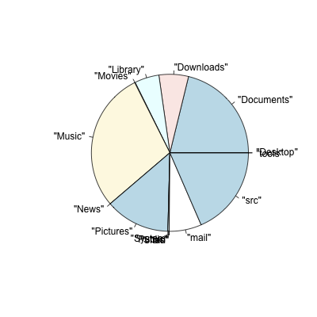
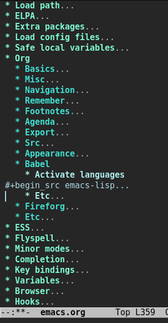

Babel: Introduction
Table of Contents
Introduction
Babel is about letting many different languages work together.
Programming languages live in blocks inside natural language
Org-mode documents. A piece of data may pass from a table to a
Python code block, then maybe move on to an R code block, and
finally end up embedded as a value in the middle of a paragraph or
possibly pass through a gnuplot code block and end up as a plot
embedded in the document.
Through extending Org-mode with several features for editing exporting and executing source code Babel turns Org-mode into a tool for both Literate Programming and Reproducible Research.
Babel augments Org-mode support for code blocks by providing:
- interactive and on-export execution of code blocks;
- code blocks as functions that can be parameterised, refer to other code blocks, and be called remotely; and
- export to files for literate programming.
Overview
Babel provides new features on a few different fronts, and different people may want to start in different places.
- Using ’src’ blocks in Org mode
- If you are not familiar with creating ’src’ blocks in an Org-mode buffer, and moving between that buffer and the language major-mode edit buffer, then you should have a look at the relevant section in the Org manual and below, try it out, and come back.
- Executing code
- The core of Babel is its ability to execute code in Org-mode ’src’ blocks, taking input from other blocks and tables, with output to further blocks and tables. This is described starting here.
- Literate Programming
- If you are a programmer writing code that you would normally execute in some other way (e.g. from the command line, or sourcing it into an interactive session), then a simple introduction to Babel is to place your code in blocks in an Org-mode file, and to use Babel’s Literate Programming support to extract pure code from your Org files.
All of these use cases, as well as exhaustive documentation of the features of Babel are covered in the Working with Source Code section of the Org manual.
Initial Configuration
If you have a working Emacs installation, then getting started with Babel is a simple process.
- If you are running Emacs24 a current version of Org-mode with Babel is already available by default. Otherwise, it is strongly recommended that you update to the latest version of Org-mode by keeping current with Org-mode development. As of Org-mode 7.0, Babel is included as part of Org-mode.
- Optionally activate the subset of languages that you will want
to execute with Babel. See Configure active languages
instructions. Emacs Lisp is activated by default so this step
can be skipped for now and all
emacs-lispexamples will still work as expected. - If you have made any changes don’t forget to evaluate your modified .emacs.
Code Blocks
Code Blocks in Org
Babel is all about code blocks in Org-mode. If you are unfamiliar with the notion of a code block in Org-mode, where they are called ’src’ blocks, please have a look at the Org-mode manual before proceeding.
Code blocks in supported languages can occur anywhere in an
Org-mode file. Code blocks can be entered directly into the
Org-mode file, but it is often easier to enter code with the
function org-edit-src-code, which is called with the keyboard
shortcut, C-c ’. This places the code block in a new buffer with
the appropriate mode activated.
#+begin_src language org-switches ,body #+end_src
For example, a code block of ruby code looks like this in an Org-mode file:
#+begin_src ruby ,require 'date' ,"This file was last evaluated on #{Date.today}" #+end_src
Code Blocks in Babel
Babel adds some new elements to code blocks. The basic structure becomes:
#+begin_src language org-switches header-arguments ,body #+end_src
- language
- The language of the code in the source-code block. Valid
values must be members of
org-babel-interpreters. - header-arguments
- Header arguments control many facets of the evaluation and output of source-code blocks. See the Header Arguments section for a complete review of available header arguments.
- body
- The source code to be evaluated. An important key-binding
is =C-c ’
. This calls =org-edit-src-code, a function that brings up an edit buffer containing the code using the Emacs major mode appropriate to the language. You can edit your code block as you regularly would in Emacs.
Source Code Execution
Babel executes code blocks for interpreted languages such as shell, python, R, etc. by passing code to the interpreter, which must be installed on your system. You control what is done with the results of execution.
Here are examples of code blocks in three different languages, followed by their output. If you are viewing the Org-mode version of this document in Emacs, place point anywhere inside a block and press C-c C-c to run the code1 (and feel free to alter it!).
Ruby
In the Org-mode file:
#+begin_src ruby
"This file was last evaluated on #{Date.today}"
#+end_src
HTML export of code:
"This file was last evaluated on #{Date.today}"
HTML export of the resulting string:
This file was last evaluated on 2009-08-09
Shell
In the Org-mode file:
#+begin_src sh echo "This file takes up `du -h org-babel.org |sed 's/\([0-9k]*\)[ ]*org-babel.org/\1/'`" #+end_src
HTML export of code:
echo "This file takes up `du -h org-babel.org |sed 's/\([0-9k]*\)[ ]*org-babel.org/\1/'`"
HTML export of the resulting string:
This file takes up 36K
R
What are the most common words in this file? In the Org-mode file:
#+begin_src R :colnames yes
words <- tolower(scan("intro.org", what="", na.strings=c("|",":")))
t(sort(table(words[nchar(words) > 3]), decreasing=TRUE)[1:10])
#+end_src
HTML export of code:
words <- tolower(scan("intro.org", what="", na.strings=c("|",":")))
t(sort(table(words[nchar(words) > 3]), decreasing=TRUE)[1:10])
| code | org-mode | #+end_src | #+begin_src | block | with | babel | that | #+name: | this |
|---|---|---|---|---|---|---|---|---|---|
| 85 | 60 | 47 | 44 | 40 | 38 | 35 | 34 | 33 | 33 |
ditaa
In the Org-mode file:
#+begin_src ditaa :file blue.png :cmdline -r +---------+ | cBLU | | | | +----+ | |cPNK| | | | +----+----+ #+end_src
HTML export of code:
+---------+ | cBLU | | | | +----+ | |cPNK| | | | +----+----+
HTML export of the resulting image:

Capturing the Results of Code Evaluation
Babel provides two fundamentally different modes for capturing
the results of code evaluation: functional mode and scripting
mode. The choice of mode is specified by the :results header
argument.
:results value (functional mode)
The ’result’ of code evaluation is the value of the last statement in the code block. In functional mode, the code block is a function with a return value. The return value of one code block can be used as input for another code block, even one in a different language. In this way, Babel becomes a meta-programming language. If the block returns tabular data (a vector, array or table of some sort) then this will be held as an Org-mode table in the buffer. This setting is the default.
For example, consider the following block of python code and its output.
import time print("Hello, today's date is %s" % time.ctime()) print('Two plus two is') return 2 + 2
4
Notice that, in functional mode, the output consists of the value of the last statement and nothing else.
:results output (scripting mode)
In scripting mode, Babel captures the text output of the code block and places it in the Org-mode buffer. It is called scripting mode because the code block contains a series of commands, and the output of each command is returned. Unlike functional mode, the code block itself has no return value apart from the output of the commands it contains.2
Consider the result of evaluating this code block with scripting mode.
import time print("Hello, today's date is %s" % time.ctime()) print('Two plus two is') 2 + 2
Hello, today's date is Wed Nov 11 18:50:36 2009 Two plus two is
Here, scripting mode returned the text that python sent to stdout. Because
the code block doesn’t include a print() statement for the last
value, (2 + 2), 4 does not appear in the results.
Session-based Evaluation
For some languages, such as python, R, ruby and shell, it is
possible to run an interactive session as an “inferior process”
within Emacs. This means that an environment is created containing
data objects that persist between different source code
blocks. Babel supports evaluation of code within such sessions
with the :session header argument. If the header argument is
given a value then that will be used as the name of the session.
Thus, it is possible to run separate simultaneous sessions in the
same language.
Session-based evaluation is particularly useful for prototyping and
debugging. The function org-babel-pop-to-session can be used to
switch to the session buffer.
Once a code block is finished, it is often best to execute it outside of a session, so the state of the environment in which it executes will be certain.
With R, the session will be under the control of Emacs Speaks Statistics as usual, and the full power of ESS is thus still available, both in the R session, and when switching to the R code edit buffer with =C-c ’=.
Arguments to Code Blocks
Babel supports parameterisation of code blocks, i.e., arguments can be passed to code blocks, which gives them the status of functions. Arguments can be passed to code blocks in both functional and scripting modes.
Simple example of using a code block as a function
First let’s look at a very simple example. The following source code block defines a function, using python, that squares its argument.
return x*x
In the Org-mode file, the function looks like this:
#+name: square #+header: :var x=0 #+begin_src python return x*x #+end_src
Now we use the source block:
#+call: square(x=6)
(for information on the call syntax see Library of Babel)
36
A more complex example using an Org-mode table as input
In this example we define a function called fibonacci-seq, using
Emacs Lisp. The function fibonacci-seq computes a Fibonacci
sequence. The function takes a single argument, in this case, a
reference to an Org-mode table.
Here is the Org-mode table that is passed to fibonacci-seq:
| 1 | 2 | 3 | 4 | 5 | 6 | 7 | 8 | 9 | 10 |
| 2 | 4 | 6 | 8 | 10 | 12 | 14 | 16 | 18 | 20 |
The table looks like this in the Org-mode buffer:
#+tblname: fibonacci-inputs | 1 | 2 | 3 | 4 | 5 | 6 | 7 | 8 | 9 | 10 | | 2 | 4 | 6 | 8 | 10 | 12 | 14 | 16 | 18 | 20 |
The Emacs Lisp source code:
(defun fibonacci (n) (if (or (= n 0) (= n 1)) n (+ (fibonacci (- n 1)) (fibonacci (- n 2))))) (mapcar (lambda (row) (mapcar #'fibonacci row)) fib-inputs)
In the Org-mode buffer the function looks like this:
#+name: fibonacci-seq
#+begin_src emacs-lisp :var fib-inputs=fibonacci-inputs
(defun fibonacci (n)
(if (or (= n 0) (= n 1))
n
(+ (fibonacci (- n 1)) (fibonacci (- n 2)))))
(mapcar (lambda (row)
(mapcar #'fibonacci row)) fib-inputs)
#+end_src
The return value of fibonacci-seq is a table:
| 1 | 1 | 2 | 3 | 5 | 8 | 13 | 21 | 34 | 55 |
| 1 | 3 | 8 | 21 | 55 | 144 | 377 | 987 | 2584 | 6765 |
In-line Code Blocks
Code can be evaluated in-line using the following syntax:
Without header args: src_lang{code} or with header args: src_lang[args]{code},
for example src_python[:session]{10*x}, where x is a variable existing in the
python session.
Code Block Body Expansion
Babel “expands” code blocks prior to evaluation, i.e., the evaluated code comprises the code block contents augmented with code that assigns referenced data to variables. It is possible to preview expanded contents, and also to expand code during tangling. Expansion takes into account header arguments and variables.
- preview
C-c M-b pis bound toorg-babel-expand-src-block. It can be used inside a code block to preview the expanded contents. This facility is useful for debugging.- tangling
The expanded body can be tangled. Tangling this way includes variable values that may be
- the results of other code blocks,
- variables stored in headline properties, or
- tables.
One possible use for tangling expanded code block is for emacs initialization. Values such as user names and passwords can be stored in headline properties or in tables. The
:no-expandheader argument can be used to inhibit expansion of a code block during tangling.
Here is an example of a code block and its resulting expanded body.
The data are kept in a table:
| username | john-doe |
| password | abc123 |
The code block refers to the data table:
(setq my-special-username (first (first data))) (setq my-special-password (first (second data)))
With point inside the code block, C-c M-b p expands the contents:
(let ((data (quote (("john-doe") ("abc123"))))) (setq my-special-username (first (first data))) (setq my-special-password (first (second data))) )
A Meta-programming Language for Org-mode
Because the return value of a function written in one language can be passed to a function written in another language, or to an Org-mode table, which is itself programmable, Babel can be used as a meta-functional programming language. With Babel, functions from many languages can work together. You can mix and match languages, using each language for the tasks to which it is best suited.
For example, let’s take some system diagnostics in the shell and graph them with R.
- Create a code block, using shell code, to list directories in our home directory, together with their sizes. Babel automatically converts the output into an Org-mode table.
#+name: directories #+begin_src sh :results replace cd ~ && du -sc * |grep -v total #+end_src
| 72 | “Desktop” |
| 12156104 | “Documents” |
| 3482440 | “Downloads” |
| 2901720 | “Library” |
| 57344 | “Movies” |
| 16548024 | “Music” |
| 120 | “News” |
| 7649472 | “Pictures” |
| 0 | “Public” |
| 152224 | “Sites” |
| 8 | “System” |
| 56 | “bin” |
| 3821872 | “mail” |
| 10605392 | “src” |
| 1264 | “tools” |
- A function, written with a single line of R code, plots the data
in the Org-mode table as a
pie-chart. Note how this code block uses the
srcnameof the previous code block to obtain the data.
In the Org-mode file:
#+name: directory-pie-chart(dirs = directories) #+begin_src R :session R-pie-example :file ../../images/babel/dirs.png pie(dirs[,1], labels = dirs[,2]) #+end_src
HTML export of code:
pie(dirs[,1], labels = dirs[,2])

Using Code Blocks in Org Tables
In addition to passing data from tables as arguments to code
blocks, and storing results as tables, Babel can be used in a
third way with Org-mode tables. First note that Org-mode’s existing
spreadsheet functionality allows values in cells to be computed
automatically from the values of other cells, using a #+TBLFM
formula line. In this way, table computations can be carried out using
calc and emacs lisp.
What Babel adds is the ability to use code blocks (in whatever
language) in the #+TBLFM line to perform the necessary computation.
Example 1: Data Summaries Using R
As a simple example, we’ll fill in a cell in an Org-mode table with the average value of a few numbers. First, let’s make some data. The following source block creates an Org-mode table filled with five random numbers between 0 and 1.
#+name: tbl-example-data #+begin_src R runif(n=5, min=0, max=1) #+end_src
| 0.836685163900256 |
| 0.696652316721156 |
| 0.382423302158713 |
| 0.987541858805344 |
| 0.994794291909784 |
Now we define a source block to calculate the mean of a table column.
In the Org-mode file:
#+name: R-mean #+begin_src R :var x="" colMeans(x) #+end_src
HTML export of code:
colMeans(x)
Finally, we create the table which is going to make use of the R
code. This is done using the org-sbe (’source block evaluate’) macro in
the table formula line.
In the Org-mode file:
#+tblname: summaries | mean | |-------------------| | 0.779619386699051 | #+TBLFM: @2$1='(org-sbe "R-mean" (x "tbl-example-data()"))
HTML export of code:
| mean |
|---|
| 0.00 |
To recalculate the table formula, use C-u C-c C-c in the
table. Notice that as things stand the calculated value doesn’t
change, because the data (held in the table above named
tbl-example-data) are static. However, if you delete that data table,
then the reference will be interpreted as a reference to the source
block responsible for generating the data; each time the table formula
is recalculated the source block will be evaluated again, and
therefore the calculated average value will change.
Example 2: Babel Test Suite
While developing Babel, we used a suite of tests implemented as a large Org-mode table. To run the entire test suite we simply evaluate the table with C-u C-c C-c: all of the tests are run, the results are compared with expectations, and the table is updated with results and pass/fail statistics.
Here’s a sample of our test suite.
In the Org-mode file:
#+TBLNAME: org-babel-tests | functionality | block | arg | expected | results | pass | |------------------+--------------+-----+-------------+-------------+------| | basic evaluation | | | | | pass | |------------------+--------------+-----+-------------+-------------+------| | emacs lisp | basic-elisp | 2 | 4 | 4 | pass | | shell | basic-shell | | 6 | 6 | pass | | ruby | basic-ruby | | org-babel | org-babel | pass | | python | basic-python | | hello world | hello world | pass | | R | basic-R | | 13 | 13 | pass | #+TBLFM: $5='(if (= (length $3) 1) (sbe $2 (n $3)) (sbe $2)) :: $6='(if (string= $4 $5) "pass" (format "expected %S but was %S" $4 $5))
HTML export of code:
| functionality | block | arg | expected | results | pass |
|---|---|---|---|---|---|
| basic evaluation | pass | ||||
| emacs lisp | basic-elisp | 2 | 4 | 4 | pass |
| shell | basic-shell | 6 | 6 | pass | |
| ruby | basic-ruby | org-babel | org-babel | pass | |
| python | basic-python | hello world | hello world | pass | |
| R | basic-R | 13 | 13 | pass |
- code blocks for tests
In the Org-mode file:
#+name: basic-elisp(n) #+begin_src emacs-lisp (* 2 n) #+end_src
HTML export of code:
(* 2 n)
In the Org-mode file:
#+name: basic-shell #+begin_src sh :results silent expr 1 + 5 #+end_src
HTML export of code:
expr 1 + 5
In the Org-mode file:
#+name: date-simple #+begin_src sh :results silent date #+end_src
HTML export of code:
dateIn the Org-mode file:
#+name: basic-ruby #+begin_src ruby :results silent "org-babel" #+end_src
HTML export of code:
"org-babel"In the Org-mode file
#+name: basic-python #+begin_src python :results silent 'hello world' #+end_src
HTML export of code:
'hello world'In the Org-mode file:
#+name: basic-R #+begin_src R :results silent b <- 9 b + 4 #+end_src
HTML export of code:
b <- 9 b + 4
The Library of Babel
(see also Org manual:Library-of-Babel)
As we saw above with the square example, once a source block
function has been defined it can be called using the lob notation:
#+lob: square(x=6)
But what about code blocks that you want to make available to every Org-mode buffer?
In addition to the current buffer, Babel searches for pre-defined code block functions in the Library of Babel. This is a user-extensible collection of ready-made source code blocks for handling common tasks. One use for the Library of Babel (not yet done!) will be to provide a choice of data graphing procedures for data held in Org-mode tables, using languages such as R, gnuplot, asymptote, etc. If you implement something that might be of use to other Org-mode users, please consider adding it to the Library of Babel; similarly, feel free to request help solving a problem using external code via Babel – there’s always a chance that other Babel users will be able to contribute some helpful code.
Babel comes pre-populated with the code blocks located in
the Library of Babel file – raw file at
library-of-babel.org
–. It is possible to add code blocks to the library from any
Org-mode file using the org-babel-lob-ingest (bound to C-c C-v
l).
(org-babel-lob-ingest "path/to/file.org")
Note that it is possible to pass table values or the output of a source-code block to Library of Babel functions. It is also possible to reference Library of Babel functions in arguments to code blocks.
Literate Programming
Let us change our traditional attitude to the construction of programs: Instead of imagining that our main task is to instruct a computer what to do, let us concentrate rather on explaining to human beings what we want a computer to do.
The practitioner of literate programming can be regarded as an essayist, whose main concern is with exposition and excellence of style. Such an author, with thesaurus in hand, chooses the names of variables carefully and explains what each variable means. He or she strives for a program that is comprehensible because its concepts have been introduced in an order that is best for human understanding, using a mixture of formal and informal methods that reinforce each other.
– Donald Knuth
Babel supports Literate Programming (LP) by allowing the act of programming to take place inside of Org-mode documents. The Org-mode file can then be exported (woven in LP speak) to HTML or LaTeX for consumption by a human, and the embedded source code can be extracted (tangled in LP speak) into structured source code files for consumption by a computer.
To support these operations Babel relies on Org-mode’s existing
exporting functionality for weaving of documentation, and on the
org-babel-tangle function which makes use of Noweb reference syntax
for tangling of code files.
The following example demonstrates the process of tangling in Babel.
Simple Literate Programming Example (Noweb syntax)
Tangling functionality is controlled by the tangle family of tangle
header arguments. These arguments can be used to turn tangling on or
off (the default), either for the code block or the Org-mode
heading level.
The following code blocks demonstrate how to tangle them into a
single source code file using org-babel-tangle.
The following two code blocks have no tangle header arguments
and so will not, by themselves, create source code files. They are
included in the source code file by the third code block, which
does have a tangle header argument.
In the Org-mode file:
#+name: hello-world-prefix #+begin_src sh :exports none echo "/-----------------------------------------------------------\\" #+end_src
HTML export of code:
echo "/-----------------------------------------------------------\\"
In the Org-mode file
#+name: hello-world-postfix #+begin_src sh :exports none echo "\-----------------------------------------------------------/" #+end_src
HTML export of code:
echo "\-----------------------------------------------------------/"
The third code block does have a tangle header argument
indicating the name of the file to which the tangled source code will
be written. It also has Noweb style references to the two previous
code blocks. These references will be expanded during tangling
to include them in the output file as well.
In the Org-mode file:
#+name: hello-world #+begin_src sh :tangle hello :exports none :noweb yes <<hello-world-prefix>> echo "| hello world |" <<hello-world-postfix>> #+end_src
HTML export of code:
<<hello-world-prefix>> echo "| hello world |" <<hello-world-postfix>>
Calling org-babel-tangle will result in the following shell source
code being written to the hello.sh file:
#!/usr/bin/env sh # [[file:~/org/temp/index.org::*Noweb%20test][hello-world]] echo "/-----------------------------------------------------------\\" echo "| hello world |" echo "\-----------------------------------------------------------/" # hello-world ends here
In addition, the following syntax can be used to insert the results
of evaluating a code block, in this case one named example-block.
# <<example-block()>>
Any optional arguments can be passed to example-block() by placing the
arguments inside the parentheses following the convention defined when
calling source block functions (see the Library of babel). For example,
# <<example-block(a=9)>>
sets the value of argument \“a\” equal to \“9\”. Note that
these arguments are not evaluated in the current source-code
block but are passed literally to example-block().
Emacs Initialization with Babel

Babel has special support for embedding your Emacs initialization
into Org-mode files. The org-babel-load-file function can be used
to load the Emacs Lisp code blocks embedded in a literate
Org-mode file in the same way that you might load a regular Emacs Lisp
file, such as .emacs.
This allows you to make use of the nice features of Org-mode, such as folding, tags, notes, HTML export, etc., to organize and maintain your Emacs initialization.
To try this out, either see the simple Literate Emacs Initialization example, or check out the Babel Literate Programming version of Phil Hagelberg’s excellent emacs-starter-kit available at Org-babel-emacs-starter-kit.
- Literate Emacs Initialization
For a simple example of usage, follow these 5 steps:
- create a directory named
.emacs.din the base of your home
directory;
mkdir ~/.emacs.d- checkout the latest version of Org-mode into the src subdirectory
of this new directory;
cd ~/.emacs.d mkdir src cd src git clone https://code.orgmode.org/bzg/org-mode.git
- place the following code block in a file called
init.elin your Emacs
initialization directory (
~/.emacs.d).;;; init.el --- Where all the magic begins ;; ;; This file loads Org-mode and then loads the rest of our Emacs initialization from Emacs lisp ;; embedded in literate Org-mode files. ;; Load up Org Mode and (now included) Org Babel for elisp embedded in Org Mode files (setq dotfiles-dir (file-name-directory (or (buffer-file-name) load-file-name))) (let* ((org-dir (expand-file-name "lisp" (expand-file-name "org" (expand-file-name "src" dotfiles-dir)))) (org-contrib-dir (expand-file-name "lisp" (expand-file-name "contrib" (expand-file-name ".." org-dir)))) (load-path (append (list org-dir org-contrib-dir) (or load-path nil)))) ;; load up Org-mode and Org-babel (require 'org) (require 'ob-tangle)) ;; load up all literate org-mode files in this directory (mapc #'org-babel-load-file (directory-files dotfiles-dir t "\\.org$")) ;;; init.el ends here
- implement all of your Emacs customizations inside of Emacs Lisp
code blocks embedded in Org-mode files in this directory; and
- re-start Emacs to load the customizations.
- create a directory named
Reproducible Research
An article about computational science in a scientific publication is not the scholarship itself, it is merely advertising of the scholarship. The actual scholarship is the complete software development environment and the complete set of instructions which generated the figures.
– D. Donoho
Reproducible Research (RR) is the practice of distributing, along with a research publication, all data, software source code, and tools required to reproduce the results discussed in the publication. As such the RR package not only describes the research and its results, but becomes a complete laboratory in which the research can be reproduced and extended.
Org-mode already has exceptional support for exporting to HTML and LaTeX. Babel makes Org-mode a tool for RR by activating the data and code blocks embedded in Org-mode documents; the entire document becomes executable. This makes it possible, and natural, to distribute research in a format that encourages readers to recreate results and perform their own analyses.
One notable existing RR tool is Sweave, which provides a mechanism for embedding R code into LaTeX documents. Sweave is a mature and very useful tool, but we believe that Babel has several advantages:
- it supports multiple languages (we’re not aware of other RR tools that do this);
- the export process is flexible and powerful, including HTML as a target in addition to LaTeX; and
- the document can make use of Org-mode features that support project planning and task management.